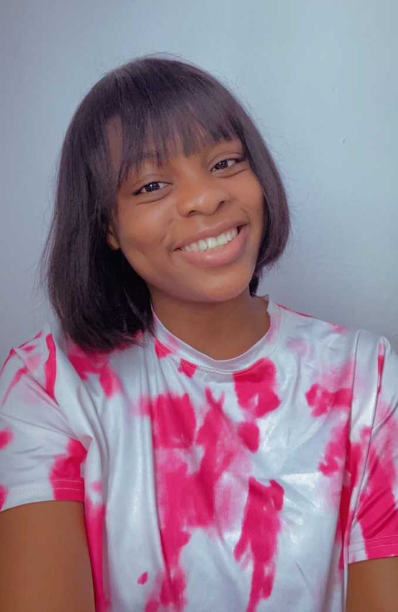

a passionate Business Development Specialist, Transcriber, Content Writer, and Customer Service
enthusiast. My main goal is ensuring your utmost satisfaction with my services.

About Me
Hey there, I'm Confidence Dickson—a passionate Business Development Specialist, Transcriber, Content
Writer, and Customer Service enthusiast. My main goal? Ensuring your utmost satisfaction with my
services. But let me tell you a bit more about myself.
I find true joy in seeing people satisfied with the work I do. There's something incredibly rewarding
about knowing that I've made a positive impact. What fuels my passion even further? Business news,
public relations, and people management. These areas ignite my curiosity and inspire me to continuously
grow and excel in my field.
With ample experience in business development and customer service, I've had the privilege of managing a
team of over 150 talented individuals while working for a major live-streaming company. It was an
incredible opportunity that sharpened my skills in people management and propelled me to achieve
remarkable results in driving business growth.
Now, let's talk about my skills. I'm a master of time management, ensuring that tasks are completed
efficiently and deadlines are met. People management is another one of my strengths—I thrive in leading
and motivating teams to reach their full potential. Additionally, I possess solid sales skills, allowing
me to identify and seize opportunities that drive success.
When it comes to my approach and philosophy, it's all about integrity, professionalism, and a genuine
commitment to meeting your needs. I believe in building strong and transparent relationships based on
trust, effective communication, and mutual respect. Together, we can foster long-term partnerships that
yield mutual growth and success.
To give you a taste of my capabilities, I invite you to explore my portfolio [insert link to your
portfolio]. There, you'll find a collection of projects that highlight my achievements in business
development, engaging content writing, and exceptional customer service. Each sample reflects the
passion and dedication I bring to my work.
Education-wise, I hold a Bachelor's degree in Mass Communication—a solid foundation that supports my
expertise in various areas. Furthermore, I'm currently pursuing a Master's degree in Public Relations
and Digital Communications. This continued education allows me to stay at the forefront of industry
trends and further refine my skills.
Outside of work, I love staying up-to-date with the latest business news and trends. Public relations is
an area I'm particularly drawn to, as it allows me to engage with people from diverse backgrounds and
build meaningful connections.
Ready to get in touch? Feel free to reach out to me at dicksonconfidence00@gmail.com or +2348149924355.
You can also connect with me on https://www.linkedin.com/in/dickson-confidence-43a63b189 to stay updated
on my latest projects and insights.
Let's collaborate and make a difference together!